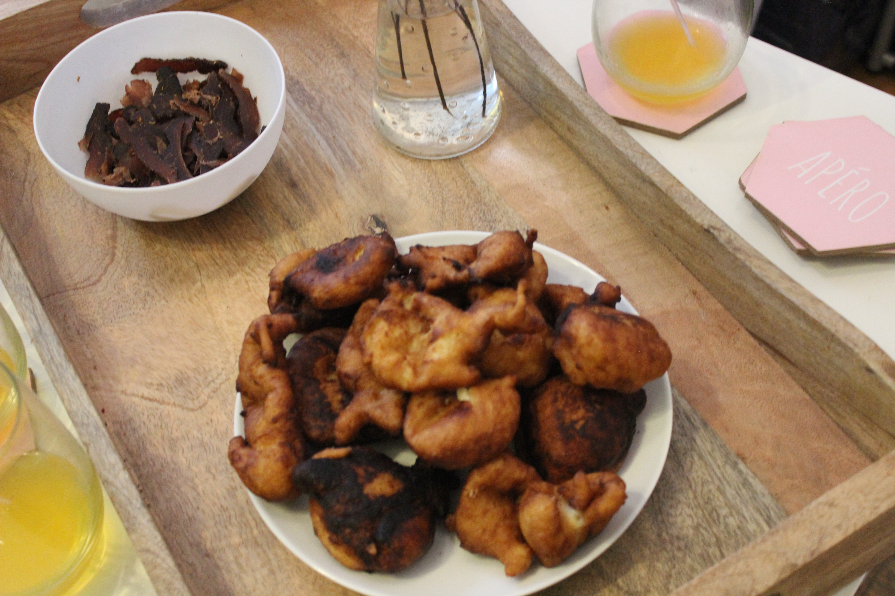
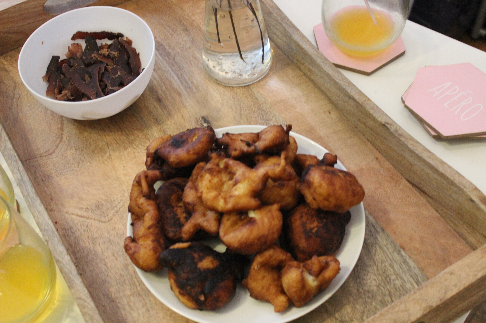

Workshop 1 | Material Spotlight: Chitenge
October 16, 2016
The first mock workshop took place on October 16th and had 5 artists in attendance. The focus for this workshop was Chitenge material. This waxed cotton fabric comes in various patterns and is popular throughout the Africa region. Commonly used as fabric for clothing or wrapped around the waist, chitenges are also popularly used to carry a child - or 'kupapa' as it is called in Nyanja, one of the main languages spoken in Zambia.
Adding to the experience, I provided the attendees with two popular snacks. The first was biltong which is a dried beef snack. The attendees also enjoyed vitumbua, fried dough balls, that I made myself following my grandmother's recipe. Both snacks were devoured by the end of the workshop!
The attendees were given the materials and were open to work with them to create their own pieces.

 

In addition to giving the participants background on the material being used, I also gave to examples of contemporary designers from the region that embrace and work with the fabric. Popoka, based in Lusaka, Zambian, is a line by Lupupa Kabezya-Lewis. Known for their simple elegance, the line blends the traditional and modern to create pieces for confident curvier women. The second example, the Bombchel Factory, is a line founded by Archel Bernard in Monrovia, Liberia. By employing women that have overcome difficult circumstances as a result of health, political, and economic troubles in the country, Archel has created a company that appeals to the cool girls of Monrovia and changes lives along the way.